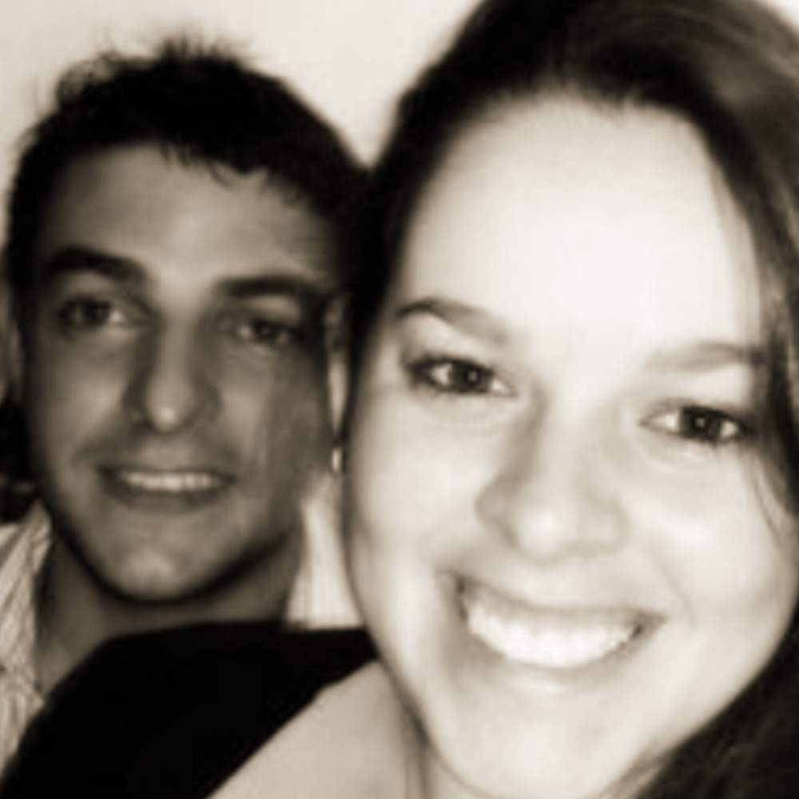

Após desistir de festa na boate Kiss, jovem morre em acidente no Paraná
Sáb. 02 de Fevereiro de 2013
Um trágico acidente interrompeu de uma só vez duas vidas e uma história de amor. O casal de namorados Jéssica de Lima Röhl, 21 anos, e Adriano Veber Stefanel, 20 anos, morreu na noite do último sábado, em Toledo, no Paraná, quando o Gol cinza do rapaz se chocou de frente com uma carreta, no km 319 da rodovia PR-182. Os fatos que antecedem o acidente tornam a fatalidade ainda mais desconcertante.
Natural de Santa Maria, Jéssica cursava Tecnologia em Agronegócio na Universidade Federal de Santa Maria (UFSM), no campus do município de Silveira Martins, onde morava. Ela era uma das organizadoras da festa Agromerados, realizada no sábado do dia 26 de janeiro, na boate Kiss, em Santa Maria, que terminou no incêndio com 237 mortes. Porém, naquela noite, Jéssica seguiu o conselho do namorado: ficou em casa.
De acordo com Marco Antônio Guilhermano de Lima, 37 anos, tio da jovem, ela já estava vestida com a camiseta customizada para a festa, mas resolveu atender ao apelo do namorado. No dia seguinte, acordou apavorada com a tragédia.
- Nunca vou esquecer que ela me disse: "Tu viu a tragédia tio? Meus Deus, o Adriano me salvou, ele é o meu anjo" - lembra.
Ainda com o trauma pela tragédia na boate, Jéssica foi encontrar o namorado no Paraná. Santa-mariense e técnico em agropecuária, Adriano trabalhava há cerca de dois anos em um comércio de insumos agrícolas. Dias antes do acidente, pediu demissão. Estava decidido a voltar para o Rio Grande do Sul.
Na noite de sábado, estava tudo preparado para o retorno ao Estado. O pai, Nilton José Stefanel, foi até Toledo para ajudar na mudança. Adriano disse que precisava comprar gelo para acondicionar alguns alimentos que levaria. Eram 21h10min quando o carro colidiu de frente com uma carreta Iveco, com placas de Cascavel, segundo informações da Polícia Rodoviária Estadual (PRE) do município de Palotina, que foi até o local.
Preso às ferragens, Adriano chegou a ser socorrido pelo Corpo de Bombeiros e levado ao Hospital Bom Jesus, em Toledo, mas morreu em atendimento. No dia seguinte ao acidente, Adriano completaria 21 anos. Jéssica não resistiu aos ferimentos e morreu no local. O motorista da carreta, Neucir do Nascimento, 34 anos, não se feriu.
Os corpos do casal foram transportados na tarde de domingo para Silveira Martins. O enterro ocorreu na manhã desta segunda-feira, no cemitério municipal, e reuniu centenas de pessoas. Parentes vieram da Itália para se despedir.
- Eu nunca gostava das namoradas dele, mas com a Jéssica eu simpatizei de primeira. E ele era uma pessoa perfeita, muito alegre. Não havia uma pessoa que não gostasse dele - lembra a irmã de Adriano, Lisiane Stefanel, 16 anos.
No enterro, a família levou um banner com uma foto do casal, para lembrar o amor que eles irão levar para além da vida.